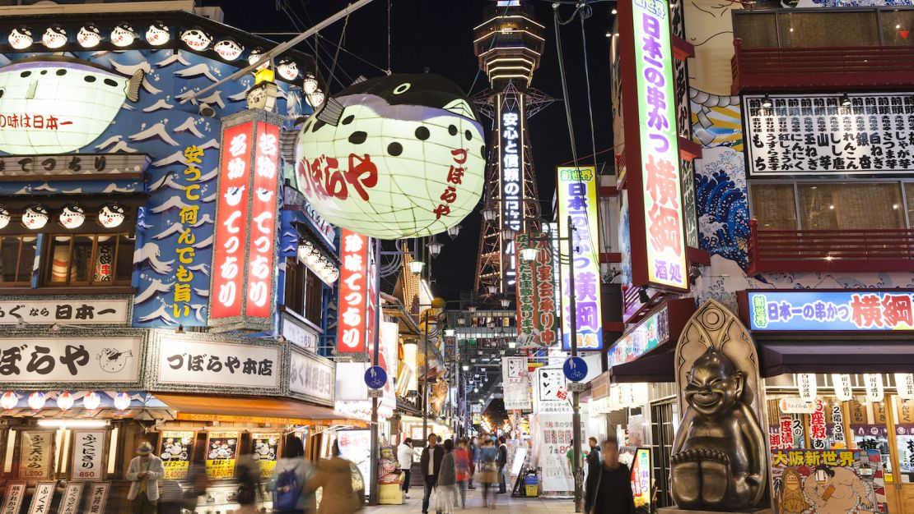
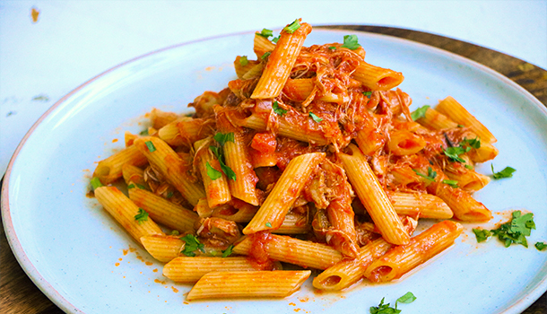
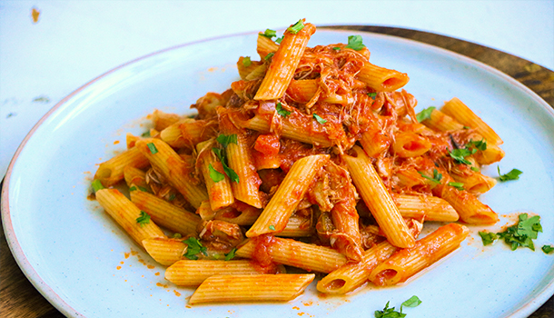
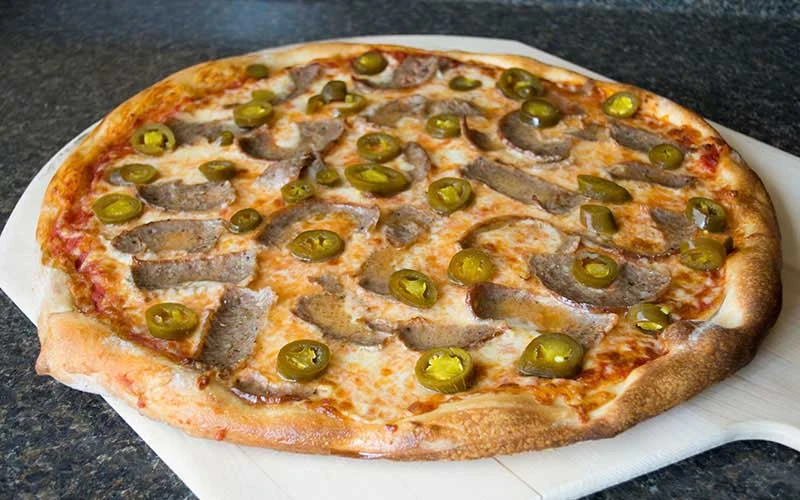
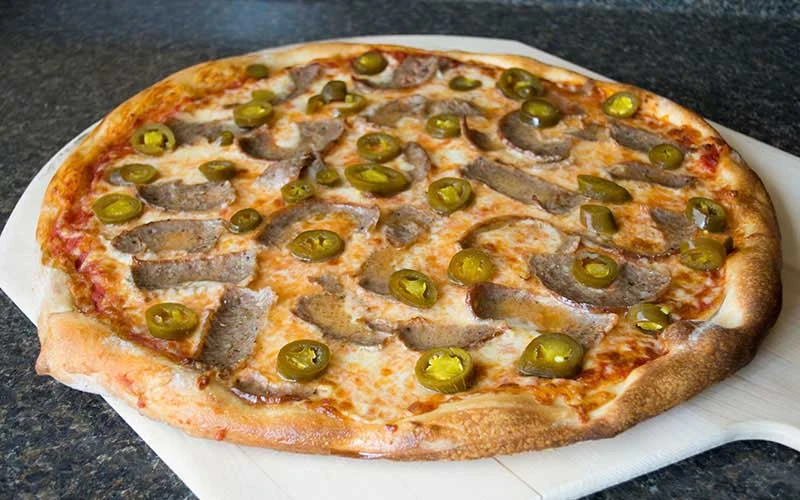

My favorite places I've traveled too
- Japan
- Taipei, Taiwan
- Hong Kong
- England
- Vancouver
I've been to Tokyo, Osaka, Fukuoka, Kyoto, Nagasaki, and Kumamoto. Out of all the cities I've been to in Japan, my favorite would be Fukuoka because the city felt more quiet and slow. There weren't many tourists there (from what I noticed). The best food I had in Fukuoka was the sashimi; we went to a restaurant that had high quality fish. My favorite was the mackerel because of the texture; it is more firm than other fish.
Taipei's nightmarkets are one of my favorite parts of the city. Although the architecture is older than Osaka's, there is still a lot of great things around. The city and culture felt more fast paced than America. The food in Taiwan is delicious; my favorite thing I ate there was the sticky rice rolls with pork floss inside. While we were there, we went to the NBA Store, a store dedicated to selling NBA merch; I have not seen a store like that in America.

Hong Kong, where my family is from, is on my list because of the food. Whenever we go to Hong Kong, I always end up eating so much; we mainly have dim sum whenever we go out with my grandma. From the street food to sit-down restaurants, Hong Kong food will always be my go to. Not only is the food good, but so is there public transportation; the subway is clean and can get you anywhere and the buses are clean and are always on time. While there are many positives, the one downside is that it gets really hot and humid during the summer. Overall, while I may be based, Hong Kong is still one of my favorite places to go.
 



 
